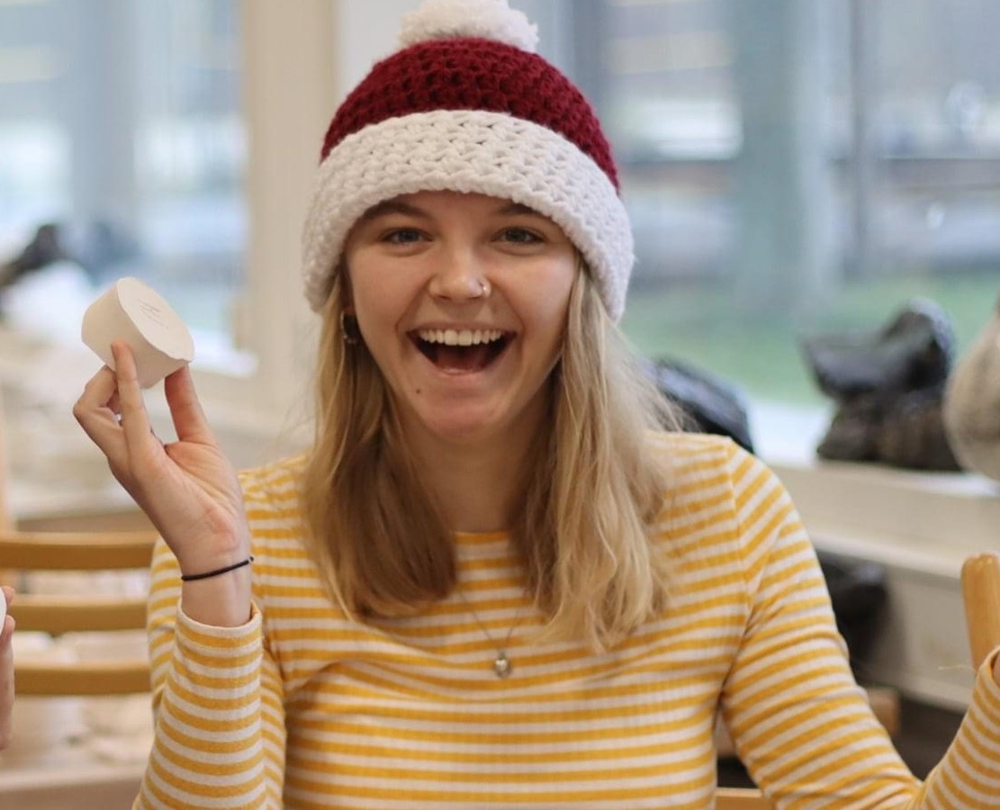
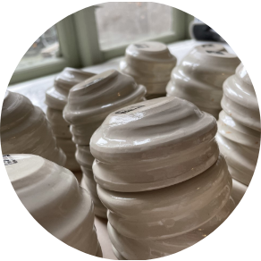
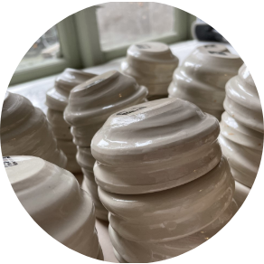

Hej! Jeg er Thea, 23 år og læser sexologi.
Ved siden af læsningen bruger jeg mine sidste vågne timer, i lerts tegn.
Jeg begyndte med keramik, da jeg tog på højskole og har ikke kunne slippe det siden da!
Jeg har altid været meget kreativ anlagt, og brugt det som en slags terapi. Vejen gennem bøger, er ofte lange, så keramik er 100 procent mit safespace.
I dag underviser jeg i Keramik på Silkeborghøjskole, og er frivillig ved forskellige kurser.
 
